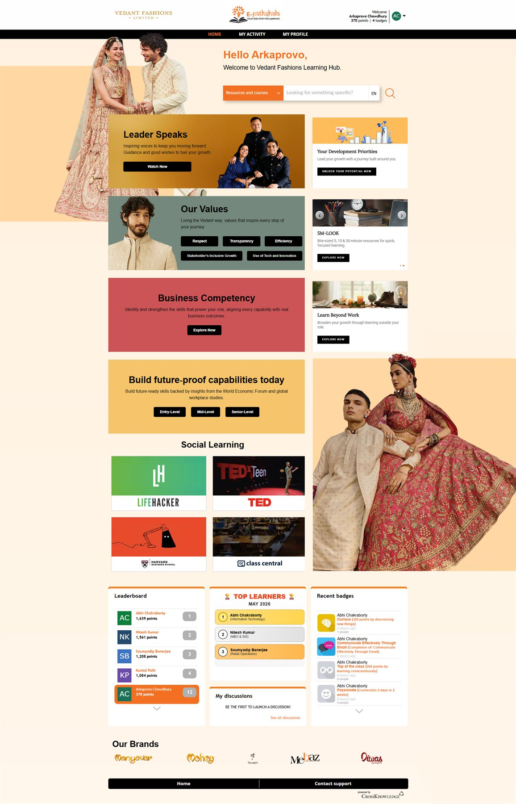

Overview
A visually refined learning platform designed to create a more engaging and brand-aligned learning environment.
Vedant Fashions
A learning platform direction shaped around fashion, usability, and premium brand presentation.

Final Visual
The page uses brand imagery, spacious hierarchy, and premium content blocks instead of heavy dashboard density.
Overview
A visually refined learning platform designed to create a more engaging and brand-aligned learning environment.
Challenge
The platform needed a premium experience aligned with a fashion-forward identity while keeping learning access clear.
What Changed
Outcome